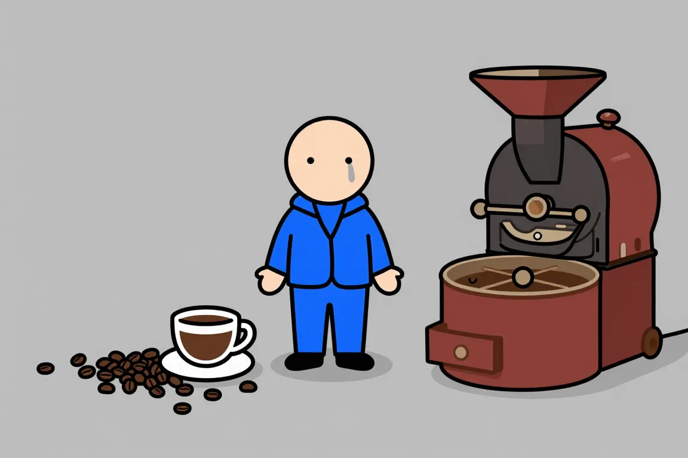

веб · 2010–now · также: Воджак, Feels guy, Семейство думер-блумер
Лысое лицо, нарисованное линиями, в сером и кремовом, с точной эмоцией, в плоской панели с подписью. Появилось на имиджбордах около 2010 года, и теперь за ним стоит множество ролей. Эта запись описывает только нейтральную рисованную форму.

Главная идея
Сведите настроение к одному нарисованному лицу и короткой подписи, чтобы читатель сразу увидел чувство.
Принципы дизайна
Рисуйте лицо лысым контуром чёрным 2px по плоской кремовой (#F5E6D3) заливке, 5–8 линий черт.
Показывайте в каждой панели одну эмоцию: бровями, ртом и несколькими отметками слёз или пота.
Ставьте фигуру на плоское однотонное поле, голова занимает 40–60% высоты.
Добавляйте подпись из 1–4 слов простым гротеском 20–28px, белым или чёрным.
Раскладывайте панели сравнения в 2 колонки с тонким разделителем 2px.
Оставляйте линии слегка неровными, как нарисованные мышью от руки.
Берите серые и приглушённые оттенки для фона; один цвет оставьте для выделения.